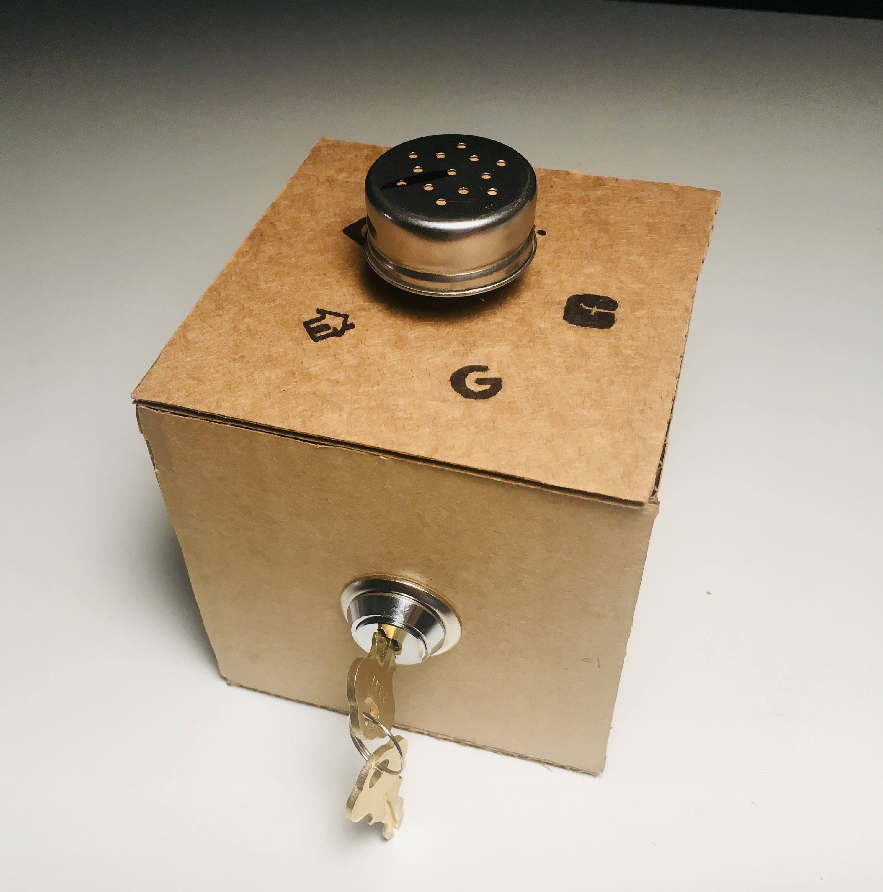

The physical password manager is an experimentation in reverse skeuomorphism; rather than inputting one's password by typing it into a computer, this device lets you literally "unlock" different account by turning a key.

This project was made with the wonderful Jingyi Zhou.
Ideation
What originally drew us to the idea for this project was a way of using interesting switches, or of using switches for interesting purposes other than what they are normally intended for. When we thought of potential interactions to model for, simple things like turning on and off one’s computer or entering passwords, which people do all the time, were ones we were instinctively drawn to. We realized that two of the most interesting of the switches we looked at, the pull cord and the key switch, corresponded really well to these actions of unlocking and turning off and on. After some deliberation, we decided on the idea of using the key switch to literally unlock accounts by inputting passwords.
We found a perfect key switch from Amazon and also used a rotary encoder from Amazon.
Physical Computing and Code
The rotary encoder is hooked up to A1, D2 and D3 of the Arduino, while the key switch (which is a simple 2 position switch) is hooked up to D5 of the Arduino (see the schematic below). The .ino file uses the keyboard and encoder libraries. Turning the rotary encoder to different icons will change the password selected, and twisting the key in the key switch will type in and enter the selected password.
We used Keyboard.h to realize most of the function. There are several requirements for the design.
Step 1: Rotate the rotary encoder to pinpoint the corresponding password in password array.
Step 2: Use Keyboard.h to enter the passwords like a human agent.
Step 3: Turn the key switch to HIGH and trigger the "ENTER" on the keyboard by Keyboard.h.
While testing, we realized that there is a necessary part we missed. The computer need to delete the wrong input before it inputs the new passwords if the user accidentally chooses the wrong one. So we should add a clear function between step 2 and step 3:
[If password is wrong, execute and go back to step 1]: Press "DELETE" to clear the previews input.
Code can be found on GitHub here.
Design and Fabrication
For fabrication, we did not have access to the materials or machines we originally intended, so instead we modeled the container in Vectorworks and made a prototype out of cardboard. The real box was planned to be made out of a softer wood which we milled in CNC.
The model in Vectorworks is 5x6 inches with a height of 4 inches. The outer layer of the box is ⅛ of an inch thick, then there is a lip for the control panel to insert into. The lip is ⅛ of an inch below the height of the box, and is 0.308 inches on all sides. The rest of the box is empty. The bottom of the box is 0.308 inches thick.
The interior of the box measures 3.594 inches by 4.188 inches by 5 ¼ inches.
On the front of the box, located in the center, is a design of a lock with a hole in the center (hole is 0.694 inches), extruded 0.605 inches from the face of the box. The lock itself is 2.15 inches high and 1 ¼ inches across.
While the physical box will use company logos to represent which password is currently selected, in Vectorworks we use text for quicker prototyping.
The control panel is 4 ¾ by 5 ¾ and ⅛ inches thick. In the exact center is a 6mm hole (0.236 inches) for the panel mount rotary encoder. The knob on the rotary controller is 1.414 inches diameter.
To attach the control panel to the box, we planned to use threaded screws put into the wood. Any size would work, but we planned to use 4 ½.
Comments? Questions? Concerns? Email me here!